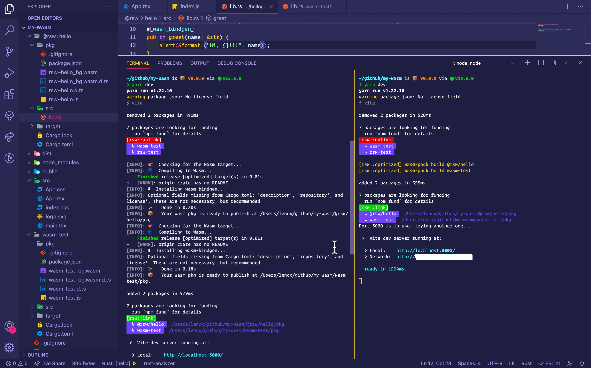
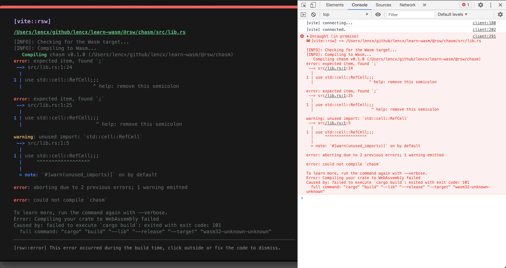
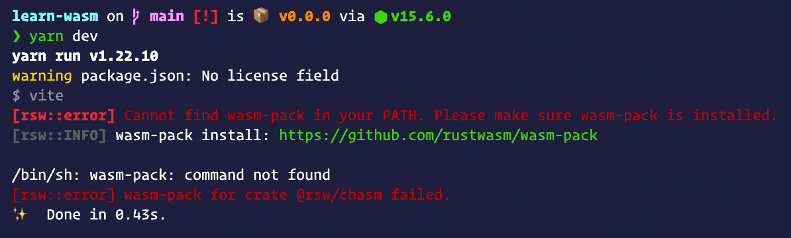
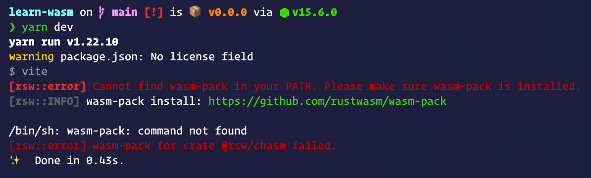
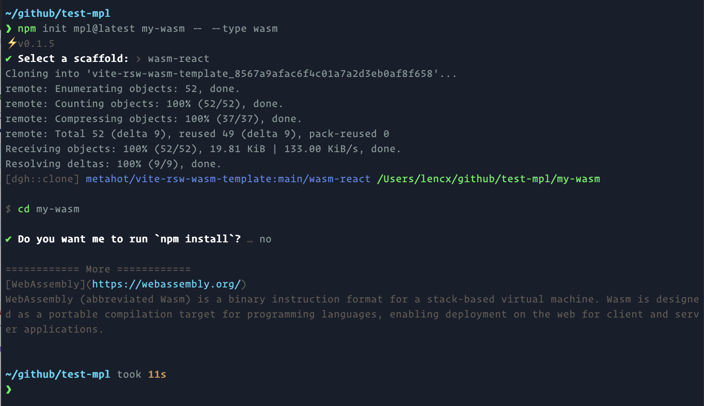
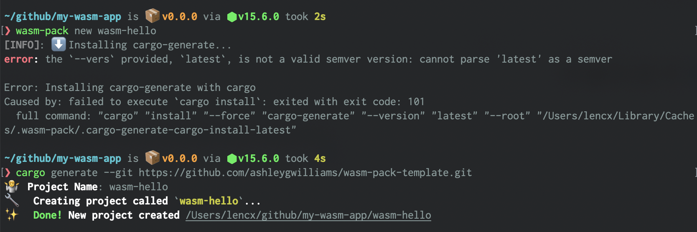

WebAssembly入门
Wasm是什么?
MDN 官方文档是这样给出定义
WebAssembly (为了书写方便，简称 Wasm )是一种新的编码方式，可以在现代的网络浏览器中运行 － 它是一种低级的类汇编语言，具有紧凑的二进制格式，可以接近原生的性能运行，并为诸如 C / C ++ 等语言提供一个编译目标，以便它们可以 Web 上运行。它也被设计为可以与 JavaScript 共存，允许两者一起工作。
对于网络平台而言，WebAssembly 具有巨大的意义——它提供了一条途径，以使得以各种语言编写的代码都可以以接近原生的速度在 Web 中运行。在这种情况下，以前无法以此方式运行的客户端软件都将可以运行在 Web 中。
WebAssembly 被设计为可以和 JavaScript 一起协同工作——通过使用 WebAssembly 的 JavaScript API，你可以把 WebAssembly 模块加载到一个 JavaScript 应用中并且在两者之间共享功能。这允许你在同一个应用中利用 WebAssembly 的性能和威力以及 JavaScript 的表达力和灵活性，即使你可能并不知道如何编写 WebAssembly 代码。
环境安装及简介
1. Rust
一门赋予每个人
构建可靠且高效软件能力的语言。
安装
# macOS
curl --proto '=https' --tlsv1.2 -sSf https://sh.rustup.rs | sh
# 其他安装方式
# https://forge.rust-lang.org/infra/other-installation-methods.html
常用命令
# 版本更新
rustup update
# 查看版本
cargo --version
# 构建项目
cargo build
# 运行项目
cargo run
# 测试项目
cargo test
# 为项目构建文档
cargo doc
# 将库发布到 crates.io
cargo publish
# nightly rust
rustup toolchain install nightly
rustup toolchain list
rustup override set nightly
2. Node.js
Node.js 是基于 Chrome 的 V8 JavaScript 引擎构建的 JavaScript 运行时
3. wasm-pack
用于构建和使用您希望与 JavaScript，浏览器或 Node.js 互操作的 Rust 生成的 WebAssembly。
安装
# macOS
curl https://rustwasm.github.io/wasm-pack/installer/init.sh -sSf | sh
# 其他安装方式
# https://rustwasm.github.io/wasm-pack/installer
常用命令
# 创建
# https://rustwasm.github.io/docs/wasm-pack/commands/new.html
wasm-pack new <name> --template <template> --mode <normal|noinstall|force>
# 构建
# https://rustwasm.github.io/docs/wasm-pack/commands/build.html
wasm-pack build
[--out-dir <out>]
[--out-name <name>]
[--<dev|profiling|release>]
[--target <bundler|nodejs|web|no-modules>]
[--scope <scope>]
[mode <normal|no-install>]
# 测试
# https://rustwasm.github.io/docs/wasm-pack/commands/test.html
wasm-pack test
# 发包
# https://rustwasm.github.io/docs/wasm-pack/commands/pack-and-publish.html
# npm pack
wasm-pack pack
# npm publish
wasm-pack publish
4. rsw-node - 部署时构建wasm
wasm-pack build 在远程部署时执行，零依赖，可以安装到全局，直接使用 rsw 命令。也可以和 vite-plugin-rsw 插件配合使用
# 全局安装，执行 `rsw -h` 可查看帮助
npm i -g rsw-node
# ---------------------------------
# 项目中安装 rsw
npm i -D rsw-node
# 或者
yarn add -D rsw-node
Step1. 需要在项目根路径下创建 .rswrc.json 文件，例如
{
"root": ".", // 默认为项目根路径，支持自定义路径，但是不可以超出项目根路径
"crates": [
"@rsw/chasm", // npm org
"@rsw/game-of-life", // npm org
{ "name": "rsw-hello", "outDir": "custom/path" } // npm package，自定义输出路径
]
}
Step2. 当配置好 .rswrc.json 后，就可以在项目根路径下执行 rsw 命令，或者和 vite-plugin-rsw 配合使用，在 package.json 中添加如下代码。
{
"scripts": {
"rsw:deploy": "rsw && npm run build"
},
}
具体使用，可以查看 lencx/learn-wasm


5. Vite
下一代前端工具
vite-plugin-rsw：vite插件，简称 Rsw - 集成 wasm-pack 的CLI
- 支持rust包文件热更新，监听
src目录和Cargo.toml文件变更，自动构建 - vite启动优化，如果之前构建过，再次启动
npm run dev，则会跳过wasm-pack构建 - 通过配置
isLib为true，在执行npm run build时会生成可发布的npm包 - 友好的错误提示：浏览器端弹窗 + 控制台及终端命令行
# 在vite项目中安装
npm i -D vite-plugin-rsw
# or
yarn add -D vite-plugin-rsw


 

6. create-mpl
脚手架 - ⚡️在几秒钟内创建一个项目！维护了多种项目模板。
# 根据命令行提示，输入项目名称，App 类型选择 `WebAssembly`，然后选择模板初始化项目
# template: `wasm-react` or `wasm-vue`
npm init mpl@latest my-wasm
直接指定 App 类型
# npm 6.x
npm init mpl@latest my-app --type wasm
# npm 7+, extra double-dash is needed:
npm init mpl@latest my-app -- --type wasm

快速开始
- 在原有
vite项目中使用，只需安装配置vite-plugin-rsw插件即可。 - 新项目可以使用
vite提供的@vitejs/app初始化项目，然后安装配置vite-plugin-rsw。 - 或者使用脚手架
create-mpl初始化项目，模板包含wasm-react和wasm-vue，会定期更新维护相关版本依赖。
项目结构
# 推荐目录结构
[my-wasm-app] # 项目根路径
|- [wasm-hey] # npm包 `wasm-hey`
| |- [pkg] # 生成 wasm 包的目录
| | |- wasm-hey_bg.wasm # wasm 文件
| | |- wasm-hey.js # 包入口文件
| | |- wasm-hey_bg.wasm.d.ts # ts 声明文件
| | |- wasm-hey.d.ts # ts 声明文件
| | |- package.json
| | `- ...
| |- [src] # rust 源代码
| | # 了解更多: https://doc.rust-lang.org/cargo/reference/cargo-targets.html
| |- [target] # 项目依赖，类似于 npm 的 `node_modules`
| | # 了解更多: https://doc.rust-lang.org/cargo/reference/manifest.html
| |- Cargo.toml # rust 包管理清单
| `- ...
|- [@rsw] # npm 组织包
| |- [hey] # @rsw/hey, 目录结构同 `wasm-hey`
| `- ...
| # 设置 `isLib` 为 true 时，会默认在 `libs` 目录下生成的npm包
| # 可以通过设置 `libRoot` 修改默认路径
|- [libs]
| |- [@rsw]
| `- [wasm-hey]
|- [node_modules] # 前端的项目包依赖
|- [src] # 前端源代码(可以是 vue, react, 或其他)
| # 了解更多: https://nodejs.dev/learn/the-package-json-guide
|- package.json # `npm` 或 `yarn` 包管理清单
| # 了解更多: https://vitejs.dev/config
|- vite.config.ts # vite 配置文件
| # 了解更多: https://www.typescriptlang.org/docs/handbook/tsconfig-json.html
|- tsconfig.json # typescript 配置文件
` ...
乍一看，可能会觉得目录有点复杂，其实它就是一个标准的基于 vite 前端项目，然后，在根路径下去添加我们需要构建的wasm包(一个 rust crate 会对应生成一个 wasm 包，可单独发布到 npm 上)
创建Wasm包
# 两种方式创建
# 1.
# 如果报错，可查看：https://github.com/rustwasm/wasm-pack/issues/907
wasm-pack new <name>
# 2.
# name 可以是 npm 组织
# 例：cargo new --lib @rsw/hello
# 需要手动配置 Cargo.toml
cargo new --lib <name>


项目配置
以react项目为例
Step1: 配置 Vite 插件 - vite.config.ts
import reactRefresh from '@vitejs/plugin-react-refresh';
import { defineConfig } from 'vite';
import ViteRsw from 'vite-plugin-rsw';
export default defineConfig({
plugins: [
reactRefresh(),
// 查看更多：https://github.com/lencx/vite-plugin-rsw
ViteRsw({
// 指定包管理器 - `pnpm` `yarn` `npm`，默认 `npm`
cli: 'npm',
// 自定义 rust 包路径，默认项目根路径
root: '.',
// wasm-pack build 参数 - `dev` `release` `profiling`，默认 `dev`
profile: 'dev',
// 编译目标 - `bundler` `web` `nodejs` `no-modules`，默认 `web`
target: 'web',
// 如果包在 `unLinks` 和 `crates` 都配置过
// 会执行，先卸载(npm unlink)，再安装(npm link)
// 例如下面会执行
// `npm unlink wasm-hey rsw-test`
unLinks: ['wasm-hey', 'rsw-test'],
// 项目根路径下的 rust 项目
// `@`开头的为 npm 组织
// 例如下面会执行:
// `npm link wasm-hey @rsw/hey`
// 因为执行顺序原因，虽然上面的 unLinks 会把 `wasm-hey` 卸载
// 但是这里会重新进行安装
// 同时支持字符串(string)和对象(RswCrateOptions)形式的配置
// https://github.com/lencx/vite-plugin-rsw/issues/8
// https://github.com/lencx/vite-plugin-rsw/blob/main/src/types.ts#L30
crates: [
'wasm-hey', // npm package
'@rsw/hey', // npm org package
{ name: '@rsw/hello', outDir: 'custom/path' }, // 自定义输出路径
],
}),
],
})
Step2: 配置 Rust 项目清单 - wasm-hey/Cargo.toml
# ...
# https://github.com/rustwasm/wasm-pack/issues/886
# https://developers.google.com/web/updates/2019/02/hotpath-with-wasm
[package.metadata.wasm-pack.profile.release]
wasm-opt = false
# See more keys and their definitions at https://doc.rust-lang.org/cargo/reference/manifest.html
[lib]
crate-type = ["cdylib", "rlib"]
[profile.release]
opt-level = "s"
[dependencies]
wasm-bindgen = "0.2.70"
Step3: 添加 Rust 代码 - wasm-hey/src/lib.rs
#![allow(unused)] fn main() { use wasm_bindgen::prelude::*; // Import the `window.alert` function from the Web. #[wasm_bindgen] extern "C" { fn alert(s: &str); } // Export a `greet` function from Rust to JavaScript, that alerts a hello message. #[wasm_bindgen] pub fn greet(name: &str) { alert(&format!("Hello, {}!", name)); } }
Step4: React 项目中调用 Wasm 方法 - src/App.tsx
import React, { useEffect } from 'react';
import init, { greet } from 'wasm-hey';
import logo from './logo.svg';
import './App.css';
function App() {
useEffect(() => {
// wasm 初始化，在调用 `wasm-hey` 包方法时
// 必须先保证已经进行过初始化，否则会报错
// 如果存在多个 wasm 包，则必须对每一个 wasm 包进行初始化
init();
}, [])
const handleHey = () => {
// 调用greet方法
greet('wasm');
}
return (
<div className="App">
<header className="App-header">
<img src={logo} className="App-logo" alt="logo" />
<p>Hello WebAssembly!</p>
<p>Vite + Rust + React</p>
<p>
<button onClick={handleHey}>hi wasm</button>
</p>
<p>Edit <code>App.tsx</code> and save to test HMR updates.</p>
</header>
</div>
)
}
export default App
常见问题汇总
Rsw插件
-
插件内部是通过
npm link的形式实现的wasm包安装，在一些极端场景下会出现，找不到依赖的安装包，导入的包不存在等错误，可以根据提示路径删除其link的文件，重新启动npm run dev可以解决。 -
npm link命令会把包link到全局环境，如果在多个项目使用相同wasm包名，可能会导致报错，解决办法，在全局npm的node_modules中删除该包即可。推荐不同项目使用不同wasm包名避免此类异常。 -
插件是处于Vite开发模式下运行构建，所以至少执行过一次
npm run dev，生成wasm包之后，再执行npm run build，否则也会报错，到不到.wasm文件之类的。 -
插件API可以配置需要卸载的包(仅限于之前通过插件配置
crates中rust项目) -
npm ERR! EEXIST: file already exists
# https://docs.npmjs.com/cli/v6/commands/npm-link # npm link uses the global prefix (see npm prefix -g for its value) # /Users/lencx/.nvm/versions/node/v15.6.0 npm prefix -g # after removing the folder, try again `npm run dev` rm -rf /Users/lencx/.nvm/versions/node/v15.6.0/lib/node_modules/@rsw/chasm
前端
// init 是 wasm 实例的初始化方法
// 在调用其他方法之前，必须先调用一次 init 方法，否则会报错
// init 会请求 `.wasm` 文件并且返回一个 `Promise`
import init, { greet } from 'wasm-test';
// -----------------------------------------
// 调用init方法，有两种方式
// 1.
// 在 react，vue3 中可以将其抽离为 `hook` 组件,
// 在进入生命周期时调用
init();
// 在调用过 init 方法之后，可以单独调用 greet 方法
greet('wasm');
// 2.
// 在初始化之后直接调用方法
init()
.then(wasm => wasm.greet('wasm'));
相关链接
- RSW 资源清单 - lencx/awesome-rsw
- Wasm 学习项目 - lencx/learn-wasm
- Vite 插件 Rsw - lencx/vite-plugin-rsw
- 项目脚手架 - lencx/create-mpl
- Awesome WebAssembly